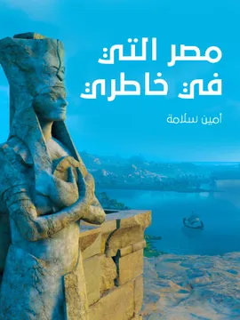

مصر التي في خاطري

قراءة عربية أصلية محددة النطاق في الصفحات 9 إلى 10، 13، 15، 17 إلى 18 من ملف PDF المرتبط، وليست تلخيصا كاملا للكتاب. نناقش ما تدعمه هذه المقاطع فقط.
رسالة حب من مترجم اليونان إلى مصر
يفتتح أمين سلامة، مترجم يوريبيديس والتراث اليوناني، كتابه بعفوية نادرة: حقًا كل شيء مرهون بأوان، عشت الدهر كله فما جال بخاطري أنني سأكتب في يوم ما هذا الكتاب الصغير، غير أن فكرته راودتني فجأة؛ كان حب مصر كامنًا في أحنائي وجاريًا مع دمائي، ماردًا جبارًا بالغ الضخامة أخذ يؤرقني دون أن يحدثني، ولكن أنا الذي تحدثت إليه فحدثني. ويعلن موقفه بلا مواربة: مصر كوطن وُلدت فيه وفيه أموت هو عندي أغلى بقعة في الدنيا برمتها، وأمام وطني يهون كل شيء، الدم والروح والمال والممتلكات. كتبه للشباب علّهم يدركون ما للوطن من حق (١٢٠ صفحة)، نص وطني شخصي من مثقف عاش بين لغتين وحضارتين.
زاوية وحدود القراءة
قراءة موجزة من ص ٩ إلى ص ١٠ وص ١٣ وص ١٥ ومن ص ١٧ إلى ص ١٨ من أصل ١٢٠ صفحة، تعرض مقدمة الكتاب ونماذج من فصوله، لا الكتاب كاملًا.
الطبعة والقراءة
صدرت هذه النسخة عن مؤسسة هنداوي عام ٢٠٢٣. جميع حقوق النشر الخاصة بتصميم هذا الكتاب وتصميم الغلاف محفوظة لمؤسسة هنداوي. جميع حقوق النشر الخاصة بنص العمل الأصلي محفوظة لأسرة السيد الأستاذ أمين سلامة.
تنزيل PDF المجاني ↓ القراءة والمصدر الرسمي ↗